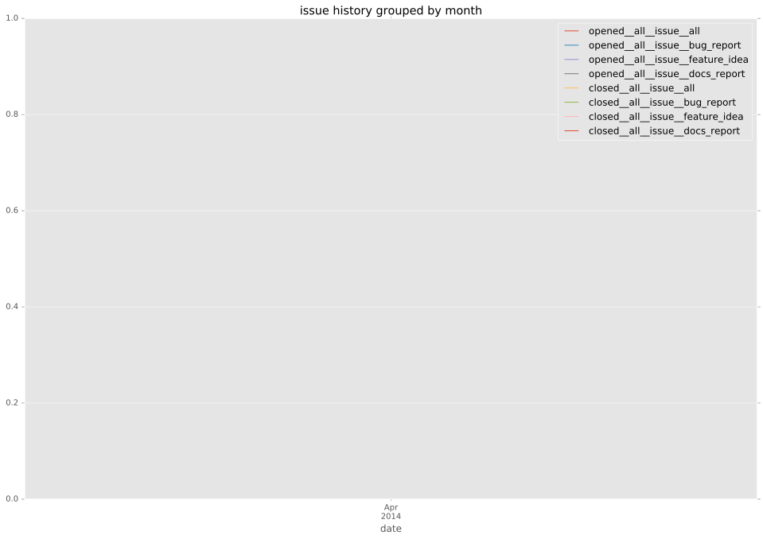
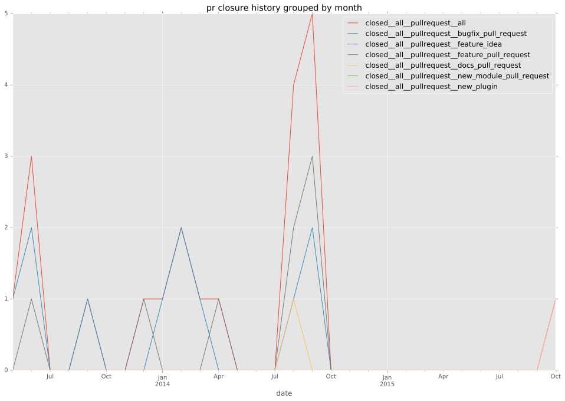

authors
- bennojoy
maintainers
- DEPRECATED
contributors
- bcrochet : 28 commits
- mpdehaan : 21 commits
- Hypermanzer : 8 commits
- jpmens : 5 commits
- abadger : 5 commits
- suonto : 3 commits
- emonty : 3 commits
- gundalow : 2 commits
- jlund : 1 commits
- jctanner : 1 commits
- cgar : 1 commits
- Shrews : 1 commits
total issue counts
bugfix pull request: 10
pullrequest: 21
docs pull request: 1
feature pull request: 9
issue: 1
new plugin: 1
bug report: 1
issue history

pullrequest history

days open by issue type
feature pull request
count: 12
std: 43.3491812512
min: 0
max: 147
median: 8.5
mean: 27.6666666667
all
count: 30
std: 54.2054520734
min: 0
max: 184
median: 3.0
mean: 31.9
pullrequest
count: 0
std: nan
min: nan
max: nan
median: nan
mean: nan
docs pull request
count: 2
std: 0.0
min: 101
max: 101
median: 101.0
mean: 101.0
bugfix pull request
count: 14
std: 10.3137590806
min: 0
max: 29
median: 1.0
mean: 4.71428571429
issue
count: 0
std: nan
min: nan
max: nan
median: nan
mean: nan
new plugin
count: 1
std: nan
min: 184
max: 184
median: 184.0
mean: 184.0
bug report
count: 1
std: nan
min: 173
max: 173
median: 173.0
mean: 173.0
closures grouped by total days open